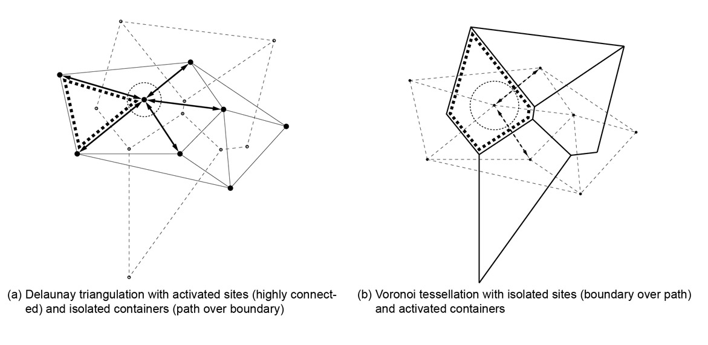
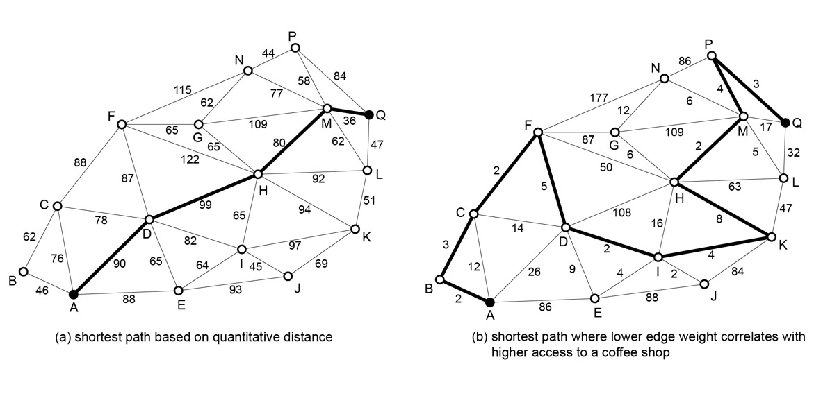
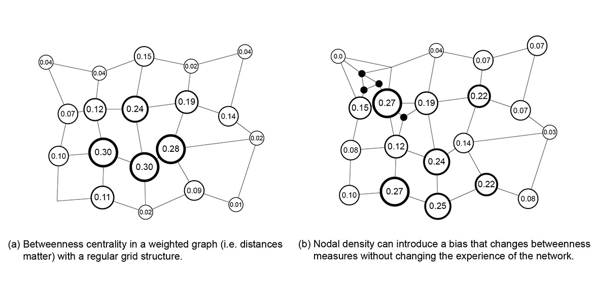

The Hidden Lives of Algorithms
Geometry and Social Meaning in Architecture
By Philip D. Plowright & Silvio Carta
Publisher: Routledge | ISBN: 978-1041003748 | 978-1041003779 | 978-1003609506
"Available in Hardback, Paperback, and eBook editions."
In the digital age, we often mistake algorithms for neutral tools and geometry for pure shape. This is a dangerous fallacy. Every line drawn by code carries the weight of the assumptions built into that code.
This text investigates the intersection of geometry, computation, and social meaning. It argues that the algorithms are not neutral tools. When we draw lines, circles, and points to describe the shape of our cities, we are encoding predetermined social interactions. This book examines the geometric operations that shape dynamics of equity, connectivity, privacy, and power. By dissecting the geometry of the line, the circle, and the point through a socio-cognitive lens, we reveal how computational tools secretly curate the social lives of the people who inhabit them.
I. Containment (Binary Logic)
The fundamental algorithmic act: dividing the world into "0" (Outside) and "1" (Inside).
The Boundary
Before an algorithm can calculate anything, it must define a domain. The boundary is the geometric line that creates a binary condition: Member vs. Non-Member.
Occlusion
The blockage of connection. Occlusion is the geometric origin of privacy, secrecy, and mystery. It is the algorithm of "who cannot see."
Partitioning
The algorithmic subdivision of space (e.g., Voronoi diagrams). Partitioning automates the creation of territory, often ignoring human nuance in favor of mathematical efficiency.

Algorithmic Partitioning
II. Movement (Connection Logic)
How algorithms calculate distance, efficiency, and relationships.
The Link
The basic unit of connection. In Graph Theory, a link (edge) represents a relationship between two spaces (nodes). No link means no relationship.
Integration
A measure of "closeness." Algorithms calculate how many steps it takes to get from Space A to everywhere else. High integration equals high social potential.
Agents
Digital actors. We simulate human movement using "Agents" that follow simple rules. However, agents optimize for math (shortest path), while humans optimize for experience (safe path).

Graph Theory/Shortest Path analysis. Visualizing the invisible structure of connection.
III. Attention (Visibility Logic)
How algorithms determine what is important by calculating what can be seen.
The Isovist
The "View Field." A polygon representing everything visible from a single point (360 degrees). Algorithms use this to measure how much information a human can access.
Strategic Visibility
The manipulation of geometry to control attention. By narrowing or widening the isovist, design dictates what is perceived as important.
Asymmetry
Power dynamics. If Point A can see Point B, but Point B cannot see Point A (e.g., a Panopticon), the algorithm creates a hierarchy of control.

Between centrality and the manipulation of bias through nodal density.
IV. Computational Axioms
"To draw a boundary is to create an outsider. The algorithm accepts no ambiguity between member and non-member."
— On Containment
"Visibility is a form of capture. To strip someone of the right to occlusion is to subject them to the geometry of submission."
— On Exposure
"The shortest path is a mathematical efficiency, not a human one. Humans optimize for meaning, not just distance."
— On Agents
"Bias is not a glitch in the code; it is a feature of the geometry we chose to draw."
— On Design